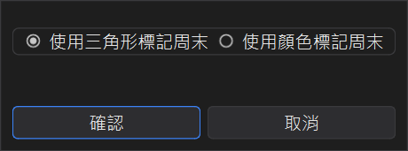
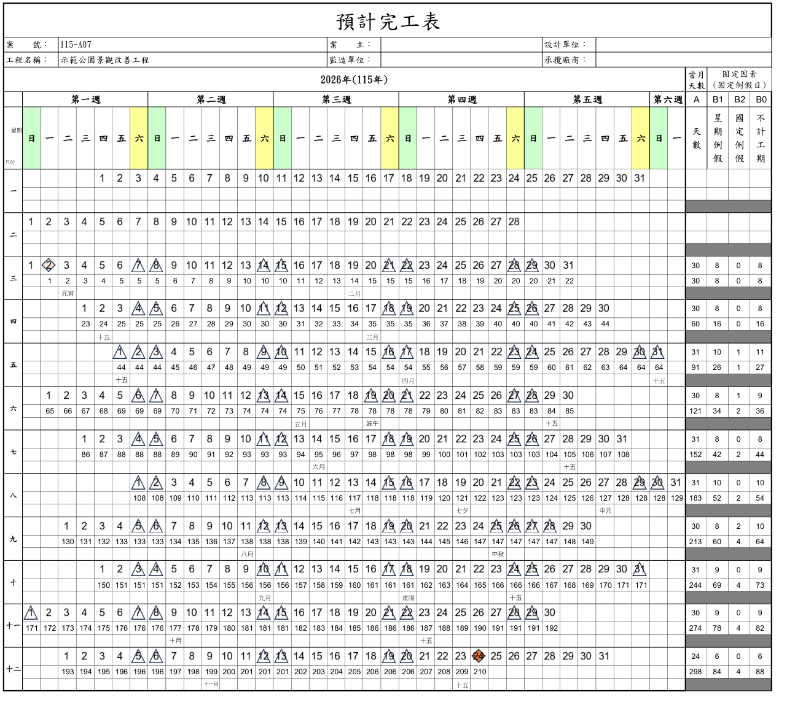
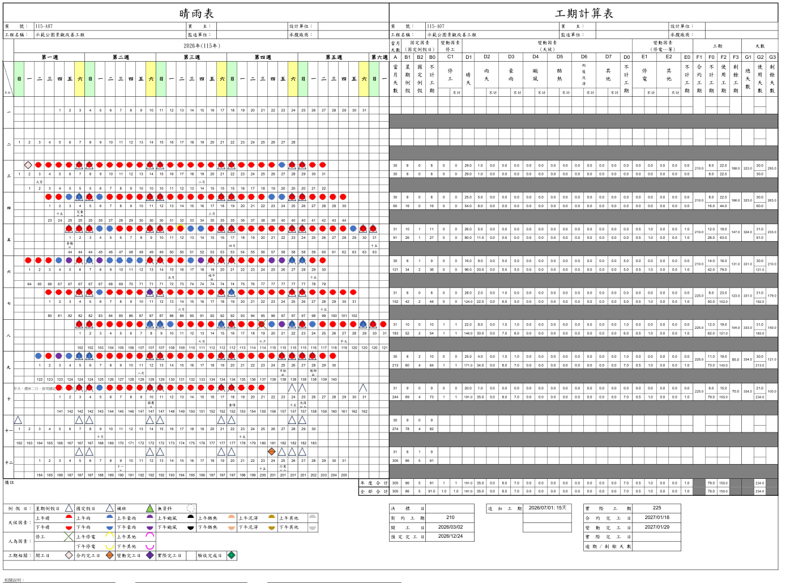
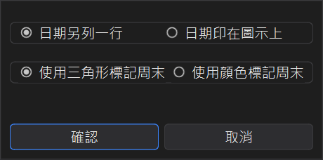
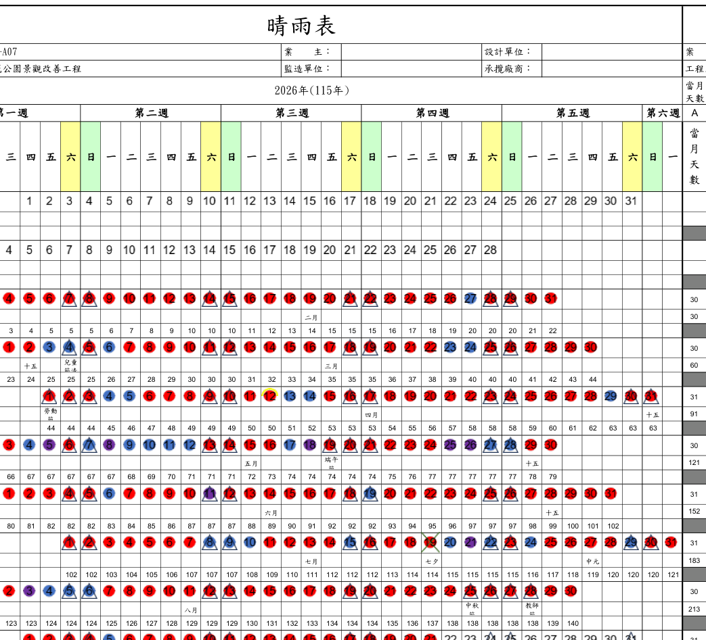
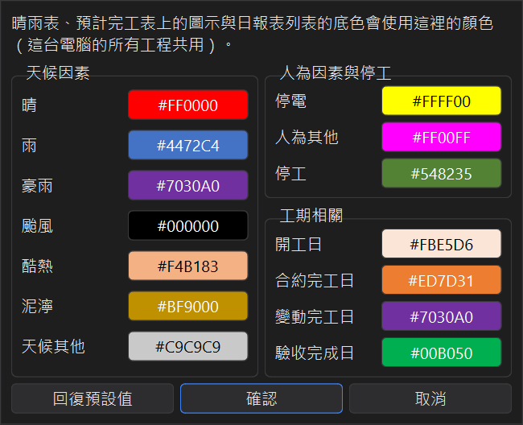

輸出預計完工表與晴雨表
工期計算工具可以輸出三種報表：預計完工表、晴雨表＋工期計算表、日報總表。 電腦有安裝 Microsoft Excel 時，預計完工表與晴雨表可以選擇存成 PDF 或 Excel；沒有 Excel 時只能存成 Excel 檔。
| 報表 | 從哪裡輸出 | 格式 |
|---|---|---|
| 預計完工表 | 主視窗右下角輸出預計完工表 | PDF / Excel |
| 晴雨表＋工期計算表 | 日報表視窗輸出晴雨表 | PDF / Excel |
| 日報總表 | 日報表視窗輸出總表 | Excel |
1、預計完工表
依開工日、契約工期、假日與追加工期，把整個工期畫成每年一張的月曆，每天下方標出累計的工期天數， 並標示開工日與完工日。輸出前可以選擇週末用三角形或顏色標記：


2、晴雨表＋工期計算表
依日報表畫出每天上午、下午的天氣與人為因素圖示，右半邊是每個月的工期計算表 （當月天數、例假日、各種不計工期的天數、累計使用工期等），下方附有開工日、契約工期、追加工期與各完工日。

輸出前可以選擇兩種版面，以及週末的標記方式：

● 日期另列一行：天氣圖示與日期分開兩行，每月 4 列。

● 日期印在圖示上：日期直接印在天氣圖示上，每月 3 列，版面較精簡。

3、日報總表
一天一列的 Excel 表，欄位與日報表列表相同（日期、節日、停工、雨量、天氣、人為因素，以及各項累計工期）， 還沒填日報的日子以灰底「無資料」標示。排列順序與日報表列表目前的顯示順序相同。
4、存檔
選好選項後會開啟存檔視窗，預設檔名是「工程編號 工程名稱_報表名稱」，存檔類型可選 PDF 或 Excel； 程式會記住你上次選的資料夾與檔案類型。輸出完成後按開啟檔案就能直接打開。
如果檔案正在 Excel 或 PDF 閱讀器裡開著，會無法覆蓋，請先關閉再輸出一次。
5、自訂圖示顏色
設定 → 晴雨表顏色可以調整每一種天氣、人為因素、停工，以及開工日、契約完工日、變動完工日等標記的顏色。 晴雨表、預計完工表與日報表列表的底色都會套用；這台電腦的所有工程共用同一組顏色，按回復預設值可以還原。
